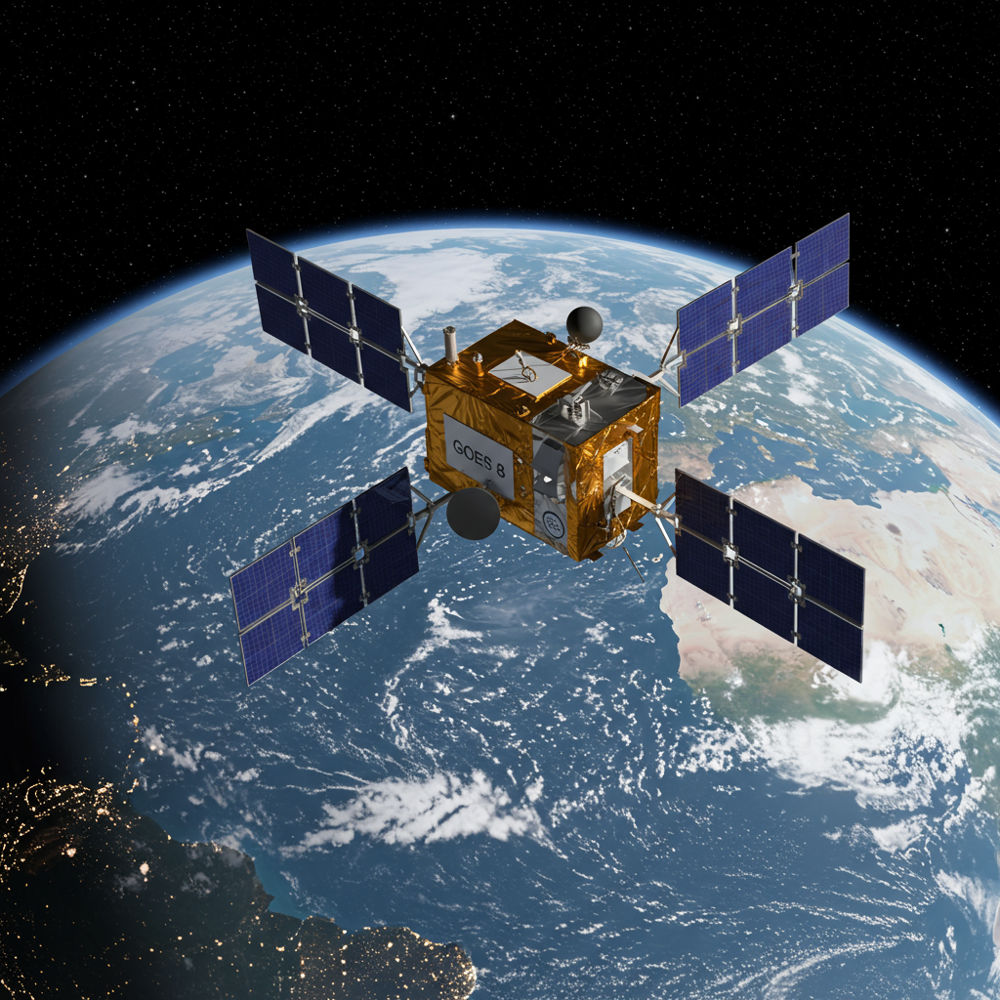

Satelite Meteorologico GOES-8
Fecha de lanzamiento: 13 De Abril de 1994
Agencia o país: EEUU NASA / NOAA
Objetivo
El GOES-8 Fue el primero de una nueva generacion de satelites Meteorologicos estacionarios estadounidenses su tarea principal proporcionar vijilancia continiua al emisferio occidental, observando Huracanes Tormentas y frentes frios y actividad atmosferica en tiempo real.
Actividad y evolución
Fue el primero en implementar sensores digitales avanzados, lo que permitio obtener imagenes multiespectrales y datos mas precisos de temperatura humedad y nubosidad.
Estado actual
Desactivado el 5 de Mayo de 2004, Traslado a orbita de cementerio geoestacionaria.Actualmente GOES-8 descansa silencioso sobre el ecuador un guardian jubilado que alguna vez observo cada nuve sobre america.
Dato histórico destacado
El GOES-8 Trasmitia imagenes completas en tiempo real, fue vital en la prediccion del huracan ANDREW en 1994, y el segimiento de tormentas tropicales en los años 90,sento las bases para satelites posteriores GOES S, GOES R Y GOES T Que hoy continual en operacion con sensores hiperespectrales y comunicacion cuantica incipiente.
⬅ Volver al Archivo de Satélites